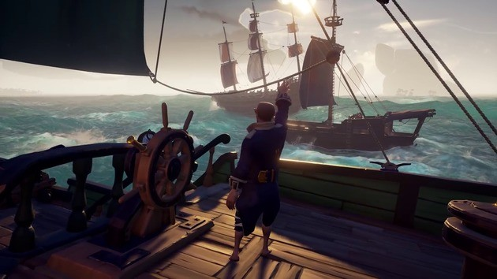
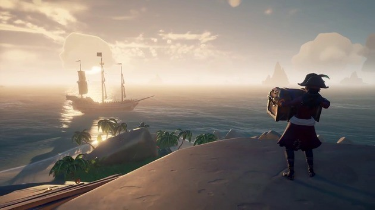
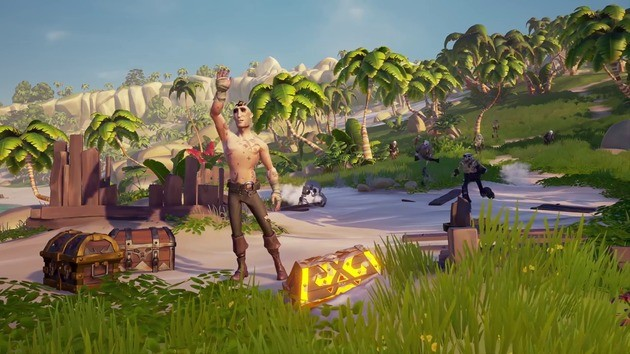
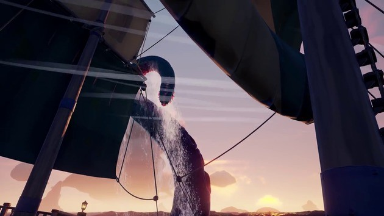

1. Não deixe o seu barco sem proteção
Atracou em uma ilha e quer explorá-la com a sua tripulação? Vá em frente! É certo que ter toda a sua tripulação na ilha permite que você encontre tesouros rapidamente, mas e se os outros piratas destroem seu barco? Deixe pelo menos um tripulante tomando conta do barco. Pode ser entendiante, mas você não fica indefeso. Se estiver com outros jogadores, entendam-se por chat ou por mensagens para escolher o jogador que vai vigiar o barco. Pode ser que na próxima ronda, seja você ou um dos seus companheiros que fica de vigia.
2. Esconda o baú em locais de difícil acesso
Se não quiser que piratas rivais roubem o seu baú com tesouros, não é boa ideia escondê-lo por baixo do convés. Suba o mastro e esconda o seu baú no cesto da gávea. Dessa forma, os seus inimigos não poderão pegar o tesouro nem escapar do seu barco rapidamente. Há outros lugares bons para esconder um baú como, por exemplo, os aposentos do Capitão. Mas se quiser mesmo impossibilitar o furto do seu precioso baú então pouse-o em cimas das velas.
3. Conte os seus passos para achar o tesouro
Encontrar baús enterrados em uma ilha é um dos grandes desafios em Sea of Thieves. Não basta apenas usar o mapa para achar a ilha, é preciso também se deslocar para o local onde está a cruz. Mas para chegar ao local exato, você vai precisar mesmo de uma bússola. Abra o seu inventário, equipe a bússola, escolha uma direção e dê um certo número de passos. Depois, equipe a pá e use-a para escavar o baú.
4. Encontre a sereia para regressar ao barco

O que acontece se você cair do seu barco? Primeiro, você fica a nadar indefeso em águas infestadas de tubarões e, em segundo lugar, o seu barco fica fora de controle. Assim que cair na água, siga o rastro de fumo para achar a sereia que te teleporta de volta para o barco. A sereia também pode ajudar em situações em que o seu barco está sob ataque e você não quer perder o seu tesouro. Se estiver próximo de um porto, pule para dentro de água e nade até ao local. Depois de entregar o baú, nade até chegar à sereia para regressar ao barco.
5. Fuja do Kraken
A criatura mais temida dos sete mares! O Kraken é um polvo com tentáculos gigantes que consegue pegar piratas e afundar um barco. Nenhum barco de piratas em Sea of Thieves está seguro porque o Kraken pode aparecer em qualquer lugar, a qualquer momento. Fugir é a sua melhor tática para sobreviver. Se não tiver outra alternativa, use os canhões e pistolas para machucar os tentáculos. Conserte os furos causados pelo Kraken rapidamente, trabalhe em equipe e talvez você consiga vencer essa terrível criatura.